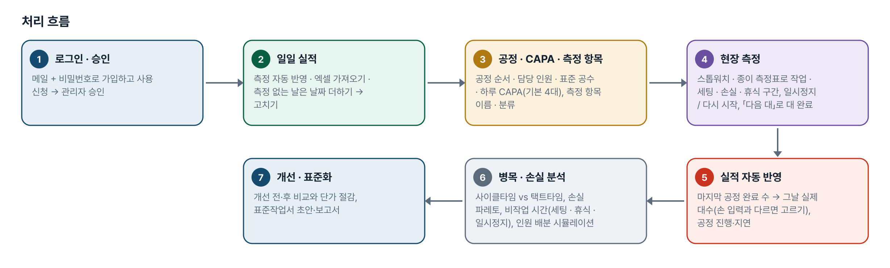
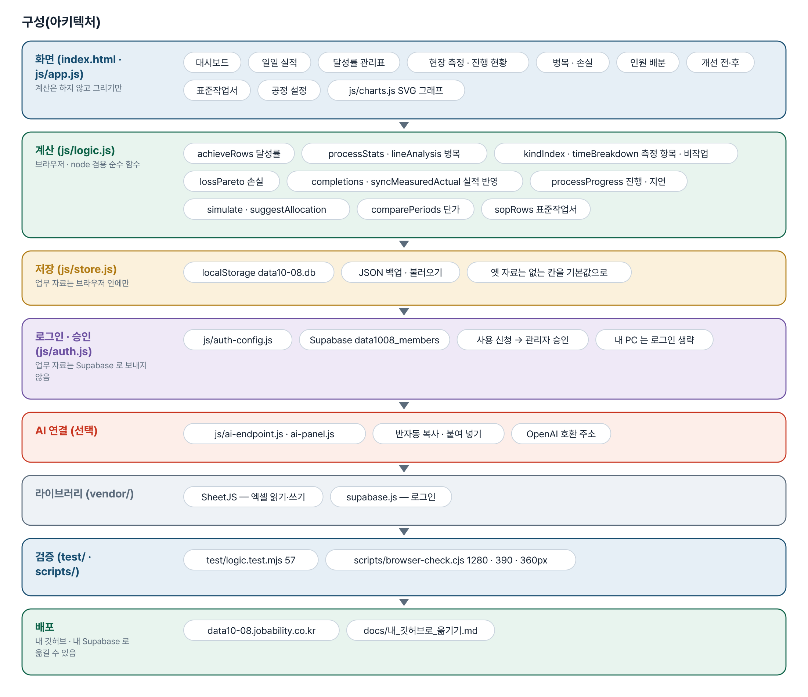
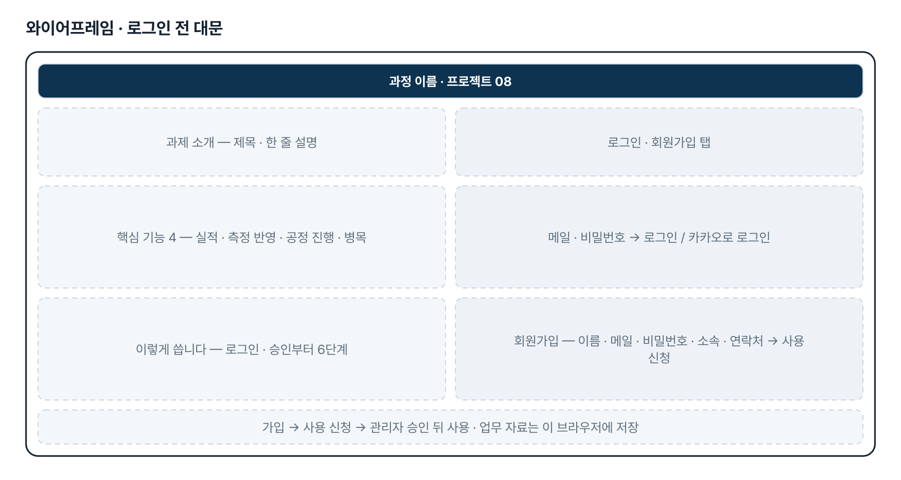
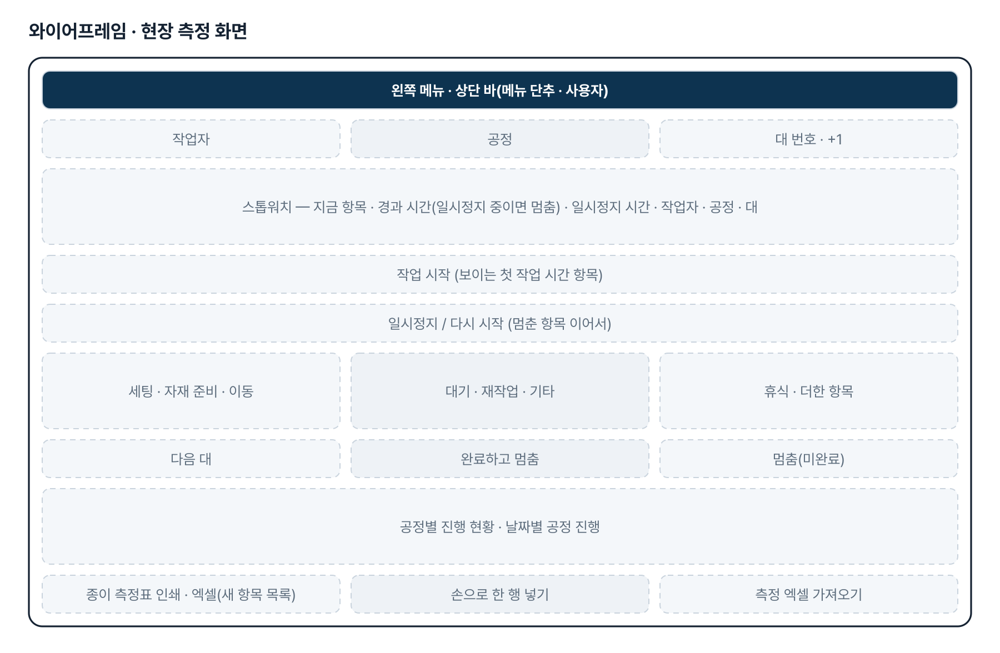
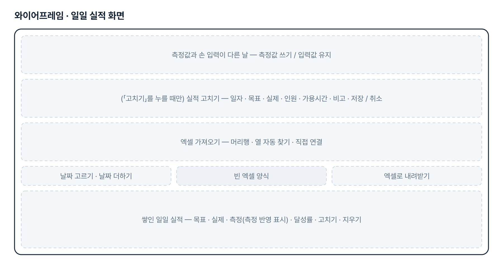
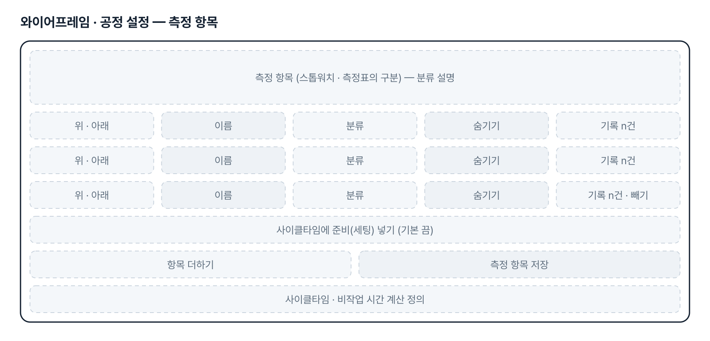
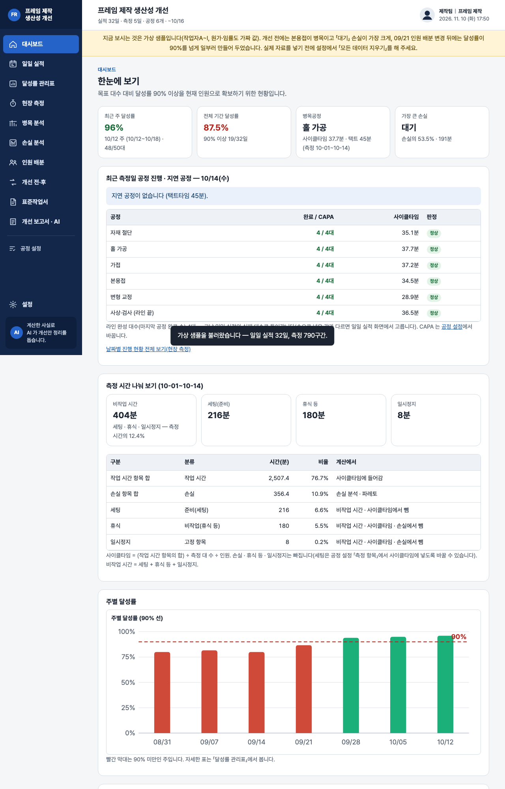

기획서 내려받기
파이프라인 · 아키텍처 · 와이어프레임 · 개발일지가 들어간 워드 문서입니다. 버전마다 따로 남깁니다.
| 버전 | 날짜 | 바뀐 점 | 파일 |
|---|---|---|---|
| v2.3 | 2026-11-10 | 일일 실적 「현장 실적 입력」 카드 삭제(요청: 실적 수정 기능과 겹침) — 고치기 양식은 표의 「고치기」를 누를 때만 열림 / 측정이 없는 날은 표 위 「날짜 더하기」 — 그날 줄을 만들고 바로 고치기 화면을 엶(목표는 설정 기본값, 저장하지 않고 닫으면 빈 줄 삭제) / 실적이 들어오는 길 = 현장 측정 자동 반영 · 엑셀 가져오기 · 날짜 더하기 → 고치기, 대시보드 · 진행 순서 · 빈 화면 안내 문구를 새 흐름으로 | 워드 내려받기 |
| v2.1 | 2026-11-10 | 측정 항목(구간 종류) 편집 — 공정 설정에서 이름 바꾸기 · 더하기 · 순서 · 숨기기, 항목마다 분류(작업 시간 · 준비(세팅) · 손실 · 비작업(휴식 등)) / 기본 항목에 「세팅」(준비) · 「휴식」(비작업) 추가, 기록은 항목 id 로 저장 — 이름을 바꿔도 지난 기록이 따라가고 계산은 분류로 유지 / 스톱워치 「일시정지 / 다시 시작」 — 멈춘 시간은 「일시정지」로 따로 기록(사이클타임 · 손실에서 빠짐), 새로 고쳐도 이어짐 / 사이클타임 = 작업 시간 항목 합(+ 설정에 따라 세팅) ÷ 대 수 ÷ 인원 — 화면 안내 · 기획서 규칙에 정의 / 대시보드 · 손실 분석 · 보고서 · AI 프롬프트에 「비작업 시간(세팅 · 휴식 · 일시정지)」 요약 | 워드 내려받기 |
| v2.0 | 2026-11-10 | 최종 기획서 — 파이프라인 · 아키텍처 · 와이어프레임 정리 / 로그인 · 사용 신청 · 관리자 승인(요청자 Supabase 로 옮길 수 있게) / 로그인 전 대문 / 현장 측정 완료 대수 → 일일 실적 자동 반영(손 입력은 덮어쓰지 않고 고르기) / 공정별 하루 CAPA(기본 4) · 공정별 진행 현황 · 지연 공정 · 대시보드 카드 | 워드 내려받기 |
요구사항과 구현
| 기획서 요구 | 구현 |
|---|---|
| 가용시간 대비 목표·실제 대수, 달성률 관리표 | 일일 실적(측정 자동 반영 · 엑셀 가져오기 · 날짜 더하기 → 고치기) → 일·주·월 달성률(합 ÷ 합), 90% 선 그래프, 90% 이상 일수, 엑셀·인쇄 |
| 공정별 작업시간 분석표와 병목공정 개선안 | 현장 측정(스톱워치·종이 측정표·엑셀) → 공정별 대당 공수·사이클타임 vs 택트타임, 병목·라인 밸런스. 개선안 문장은 AI 반자동 |
| 작업 순서 및 인원 배분 개선안 | 인원 배분 시뮬레이터 + 같은 총인원 자동 배분 제안. 한 사람만 할 수 있는 작업·선후 관계는 2단계 |
| 개선 전·후 생산량과 손실시간 비교표 | 두 기간 비교 — 달성률·실제 대수·대당 투입공수·병목·손실 유형별 |
| 제작 단가 절감 효과 분석표(대당 절감액·절감률) | 대당 투입공수 × 임률 + 기타 원가(입력값 기준), 절감액·절감률·연간 절감, KPI 3개. 회사 원가 방식은 확인 후 맞춤 |
| 목표 달성을 위한 표준작업서 | 공정 설정의 순서·인원·표준 공수·작업 요점·품질/안전 → 표준작업서 초안(인쇄·Word·엑셀), AI 로 문장 다듬기 |
| 현장 측정 완료 수량을 일일 실적에 자동 기록(2026-11-10) | 「다음 대」로 끝낸 대수를 날짜 × 공정별로 세고, 마지막 공정 완료 수를 그날 실제 대수로 자동 반영. 손 입력과 다르면 덮어쓰지 않고 고르기 |
| 공정별 CAPA(예: 일 4대) 기준 진행 현황과 지연 공정(2026-11-10) | 공정 설정에 하루 CAPA(기본 4), 공정별 진행 현황 · 날짜별 공정 진행 표, 대시보드 「오늘 공정 진행 · 지연 공정」 카드 |
| 측정 항목(자재 준비 · 이동 · 대기 · 재작업 등)을 현장에 맞게 고치고 더하기(2026-11-10 v2.1) | 공정 설정 「측정 항목」 — 이름 · 분류 · 순서 · 숨기기 · 더하기. 기록은 항목 id 로 남아 이름을 바꿔도 지난 기록이 따라가고, 계산은 분류로 합니다. 측정표 인쇄 · 엑셀 · 가져오기도 새 목록을 따릅니다 |
| 일시정지 — 세팅 · 본작업 · 휴식 시간을 나눠 재기(2026-11-10 v2.1) | 스톱워치 「일시정지 / 다시 시작」, 기본 항목 「세팅」(준비) · 「휴식」(비작업). 사이클타임은 작업 시간 항목만(세팅은 설정으로 선택), 비작업 시간(세팅 · 휴식 · 일시정지)은 대시보드 · 손실 분석에 따로 요약 |
| 팀 공유 | 2단계 — 지금은 브라우저 저장 + JSON 백업 |
| 일일 실적 입력란은 실적 수정과 겹치므로 삭제(2026-11-10 요청) | 새 실적 입력 카드를 빼고 표의 「고치기」 하나로 정리. 측정이 없는 날은 「날짜 더하기」로 줄을 만든 뒤 같은 고치기 화면에서 입력 |
그림으로 보기







개발일지
2026-11-10 · v2.3 — 일일 실적 입력란 정리
- 패들릿 요청 반영 — 실적 수정 기능과 겹치는 「현장 실적 입력」 카드를 빼고 표의 「고치기」 하나로 정리
- 측정이 없는 날을 넣을 길로 표 위 「날짜 더하기」만 남김(새 입력 화면을 만들지 않고 고치기 화면을 다시 씀), 저장하지 않고 닫으면 빈 줄을 지움
- 순수 함수 addDailyDay · dropBlankDay, 대시보드 진행 순서 · 빈 화면 안내 · README 문구를 새 흐름으로
- 로직 테스트 60개 · 화면 점검(1280 · 390 · 360px, 입력란 없음 · 날짜 더하기 → 저장 / 취소 · 있는 날짜 · 고치기) 통과
2026-11-10 · v2.1 — 측정 항목 편집 · 일시정지
- 패들릿 추가 개선 요청 반영 — 공정 설정 「측정 항목」에서 이름 · 분류 · 순서 · 숨기기 · 더하기, 기본 항목에 세팅 · 휴식
- 기록은 항목 id 로 저장(옛 기록은 이름 = id 로 그대로 짝지어짐), 계산은 분류로 — 이름을 바꿔도 사이클타임 · 손실 · 파레토 유지
- 스톱워치 「일시정지 / 다시 시작」 — 멈춘 시간은 일시정지로 따로, 새로 고쳐도 이어짐
- 대시보드 · 손실 분석 · 보고서 · AI 프롬프트에 비작업 시간(세팅 · 휴식 · 일시정지) 요약, 사이클타임 계산 정의를 화면 · 규칙에
- 로직 테스트 57개 · 화면 점검(1280 · 390 · 360px) 통과
2026-11-10 · 현장 측정 → 일일 실적 자동 반영 · 최종 기획서
- 패들릿 기능 개선 요청 반영 — 공정 설정에 하루 CAPA, 스톱워치 「다음 대」 · 「완료하고 멈춤」 · 「멈춤(미완료)」, 측정 엑셀 「대 완료」 칸
- 마지막 공정 완료 수를 그날 일일 실적의 실제 대수로 자동 반영, 손 입력과 다르면 「측정값 쓰기 / 입력값 유지」
- 현장 측정에 공정별 진행 현황 · 날짜별 공정 진행 표, 대시보드에 「오늘 공정 진행 · 지연 공정」 카드
- 로그인 · 사용 신청 · 관리자 승인, 로그인 전 대문, 최종 기획서 v2.0
- 로직 테스트 48개 · 화면 점검(1280 · 390 · 360px) 통과
2026-10-27 · 판 맞추기
- index.html 의 모든 js·css 에 ?v=판, fresh-guard, logic.js · app.js 판이 다르면 계산하지 않고 새로고침 안내
2026-10-26 · 비공개 전환
- 리포를 비공개로 바꾸고 README 의 Fork·ZIP 안내를 문의 안내로 교체
2026-10-20 · 기획서 v0.1 + 1단계
- 패들릿 접수 글을 기획서로 정리, 화면 12개 1단계 구현
- 달성률은 합 ÷ 합, 병목은 순작업 사이클타임, 측정 인원은 기록에서 세기, 자동 배분은 가장 긴 공정에 한 명씩
- AI 프롬프트에서 작업자 이름 가림(기본) · 원가는 켤 때만
- 로직 테스트 39개, 브라우저 확인 1280 · 390px